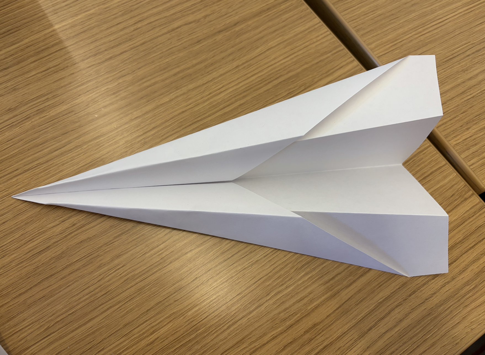

For this activity, we pretended to not know how to make a paper airplane and used Gen AI to teach us. I used ChatGPT and prompted it with "i have absolutely no idea how to make a paper airplane and I want you to give me how to make a paper airplane step by step. I want you to give me one step at a time and be super specific and detailed. I have a regular sheet of paper in front of me and I want it to go far." Chat ended up generating me a list of instructions that was very detailed, and involved some small ASCII drawings. This activity helped me learn how to communicate specifically with GenAI and above is the final product.